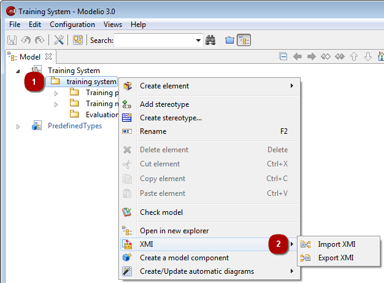
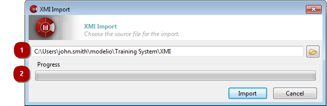

The Modelio XMI import operation is used to import a UML2 model into Modelio from an XMI file.
The “Import XMI” command can only be run on packages. Imported elements will be located in the selected package.

Key:
Right-click on a package to open the context menu.
Run the “XMI/Import XMI” command.

Key:
This field is where you select the path of the XMI file that you are about to import.
This progress bar shows the progress of the import operation.